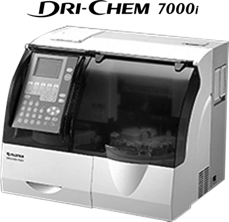
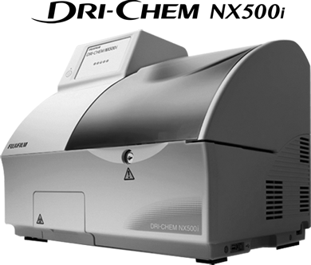
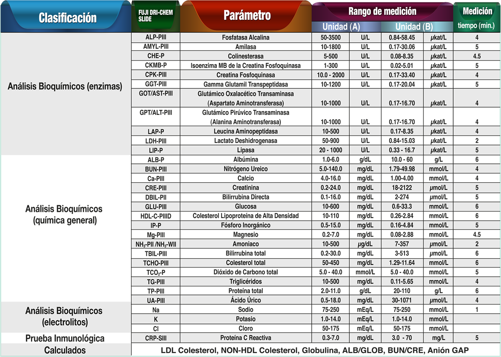
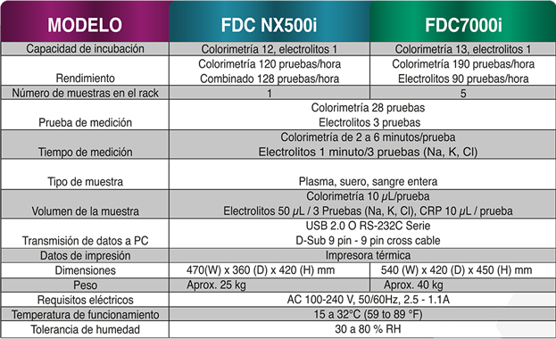

Dri-chem
Nueva generación de diagnóstico in vitro de química seca
DESCRIPCIÓN:
FUJI DRI-CHEM de FUJIFILM es un analizador de química seca que puede realizar múltiples pruebas de química clínica. Consta de un sistema de autopipeteo que no requiere calibración ni agua por lo que es de bajo mantenimiento.
Usted podrá obtener resultados rápidos y confiables en tan sólo tres pasos.
- Sólo se requieren 10 µl por prueba.
- La muestra no requiere tratamientos previos.
- Dilución y pipeteo automático que minimiza el riesgo biológico.
- No requiere calibración al poseer Sistema de Tarjeta QC.
- Tamaño compacto.
- No requiere instalaciones especiales como drenaje y agua.
Registro Sanitario: 0025E2013 SSA
DRI-CHEM FDC 7000i
Analizador automático con capacidad de procesamiento de 5 pacientes a la vez.

DRI-CHEM Nx 500i
Puede medir elementos de colorimetría y electrólitos en la misma unidad de forma simultánea.

Parámetros:

CARACTERÍSTICAS:

Dri-Chem de FUJIFILM es el método de química clínica seca con resultados más precisos con base en la última publicación de PACAL, hasta la fecha de impresión de este material.
DATOS COMPLEMENTARIOS: En FUJIFILM de México queremos convertirnos en su mejor aliado, es por eso que estamos comprometidos con nuestros clientes y ofrecemos el mejor servicio posventa.
FUJIFILM DE MÉXICO, S.A. de C.V.
Teléfono: (55) 5263-5500
e-mail: diagnosticoinvitro@fujifilm.com.mx
www.fujifilm.com.mx